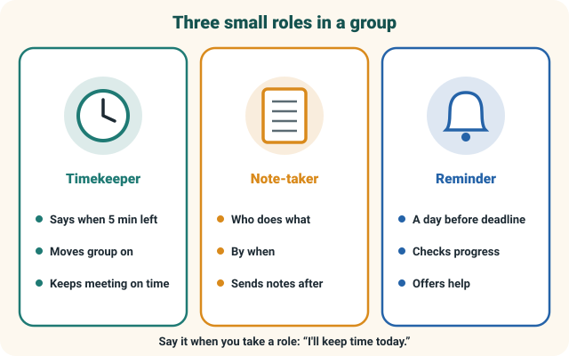

K9 · Leadership and developing others › Level 1 Exploring
Take on a small role in a group, and show a newcomer one task
Leadership does not start with a job title. At Level 1, you practise with small roles in a group. The next lesson, at Level 2: Coordinate a small group task.
1. Objectives
- Take on and do well one small role in a group: timekeeper, note-taker or reminder.
- Show a newcomer a task you already know, using 4 steps.
2. Retrieval warm-up
- What are the three prompts for finding another way?
- Sharing an idea with your group in 2 sentences: what goes in each sentence?
Answers
- Remove; combine or reorder; borrow.
- Sentence 1: what the idea is. Sentence 2: how it helps.
Review: Ask "is there another way?".
3. Explanation
In a group, many small jobs belong to nobody. Nobody watches the clock, so meetings run long. Nobody takes notes, so the next day nobody remembers what was agreed. Taking on a small role is the first way to help lead a group.
Three common small roles:
Three small roles in a group
- TimekeeperSays when 5 minutes are left, and reminds the group to move to the next item.
- Note-takerWrites down who does what and by when, then sends it to the group afterwards.
- ReminderOne day before the deadline, messages each person to ask about their progress.
When you take a role, say so clearly: "I'll keep time today." Keep the role until the end, even when you are busy with your own part.

Showing a newcomer a task: 4 steps.
1. Say the purpose 2. Show it, step by step 3. They try 4. Praise one point, fix one point
Step 1. Say the purpose. "We put new stock at the back so the older stock sells first and doesn't go out of date."
Step 2. Show it, saying each step. Go slowly, and talk as you work. Do not do it fast and then say "it's easy".
Step 3. They try. Let the newcomer do it while you watch. Do not take over and do it for them.
Step 4. Praise one point, fix one point. Praise something specific they did right. Correct only the most important point. If you correct too much at once, it is hard to remember.
Only teach tasks you know for certain. For tasks involving safety or machines, let the person in charge do the training.
4. Workplace example
Hypothetical scenario. Toby has worked part-time in a bookshop for 2 months. Today there is a new colleague, Ella. The manager asks Toby to show Ella how to gift-wrap books.
Toby does this:
- He says the purpose: "We wrap books so customers can give them as presents, and the books don't get scratched."
- He wraps one book slowly, saying each step: measure the paper, fold the edges, stick the tape.
- He gives Ella the next book and watches.
- "Your folded edges look neat. If you put the tape on the back, the person receiving it won't see it."
Why this works: Toby gives the reason first, shows it slowly, and lets Ella do it herself. He praises one point and corrects only one.
5. Practice
Hypothetical scenario. Your group of 5 is preparing a presentation. The last group meeting lasted 2 hours, and at the end nobody remembered who was doing what.
Choose a small role for yourself. Write how you take the role, and 2 things you will do in the next meeting.
Hint 1
The problem has two parts: the meeting is too long, and nobody remembers the tasks. Each part matches a role.
Model answer
Note-taker: "I'll take notes this time." Task 1: write down who does which part, and by when. Task 2: post the task list in the group chat right after the meeting.
Or timekeeper: "I'll keep time. Let's aim for 45 minutes." Task 1: say when 10 minutes are left. Task 2: remind everyone to agree the tasks before time runs out.
6. Self-check
Choose an answer. Every option has an explanation.
Question 1. Your group often forgets who was given which task. Which role helps most?
-
Not quite. A timekeeper keeps meetings on time, but does not keep a record of tasks.
-
Correct. Correct. Notes sent to the group help everyone remember their tasks.
-
Not quite. Everyone remembering for themselves is exactly why the group forgets.
Question 2. When showing a newcomer a task, what should you do first?
-
Not quite. If you go fast, the newcomer cannot follow. Go slowly and say each step.
-
Correct. Correct. Knowing the reason helps the newcomer remember the method and do it right.
-
Not quite. Someone who knows nothing about the task will probably get it wrong.
Question 3. The newcomer tries and makes 3 mistakes. How should you give feedback?
-
Not quite. Too many corrections at once are hard for a newcomer to remember.
-
Correct. Correct. One important correction at a time helps the newcomer improve step by step.
-
Not quite. If you do it for them, the newcomer does not learn.
Question 4. A newcomer asks how to use the heavy-duty paper cutter. You have used it only twice. What do you do?
-
Not quite. If a task involves safety and you are not sure, do not teach it yourself.
-
Correct. Correct. Only teach what you know for certain. Leave safety training to the person in charge.
-
Not quite. A dangerous machine needs training in person from someone experienced.
7. Reflection
- In a group you belong to, which small job usually belongs to nobody?
- The last time someone showed you a task, what made it easy to understand?
8. Real-world application
Over the next 7 days, take one small role in a group session and keep it until the end. If you get the chance, show someone a task using the 4 steps. Note how far they got.
9. Metadata
| skill | K9 · Leadership and developing others |
|---|---|
| level | Level 1 · Exploring |
| group | N2 |
| framework_map | WEF: Leadership and social influence; SkillsFuture CCS: Developing People; NACE: Leadership (reference only) |
| original | Vietnamese version |
| updated | 2026-11-14 |
Finish the lesson
Mark it as done and the site suggests reviews after 1, 3 and 7 days. The data stays on your device only.
Suggested reviews: